La selección ganó a Australia y se enfrenta hoy a Hungría en la semifinal de la Copa del Mundo , que concede tres plazas.
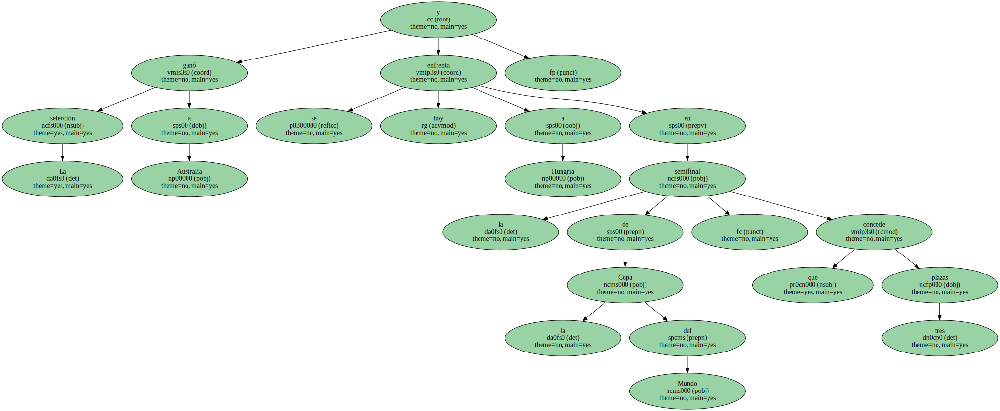España acaricia la posibilidad de luchar en Sydney por revalidar su título olímpico de Atlanta-96.
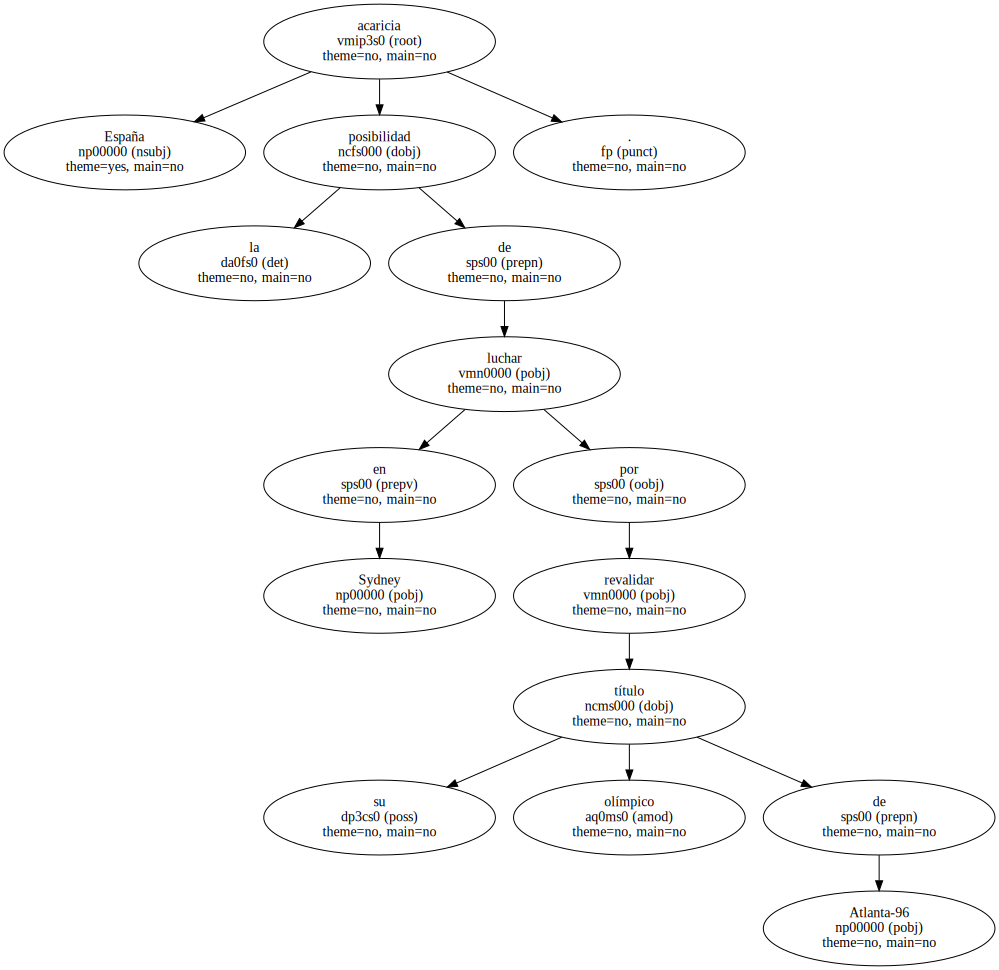La selección de Joan Jané superó a Australia ( 6-5 ) y se clasificó para las semifinales de la Copa del Mundo , que se está disputando en el parque olímpico de la ciudad australiana.
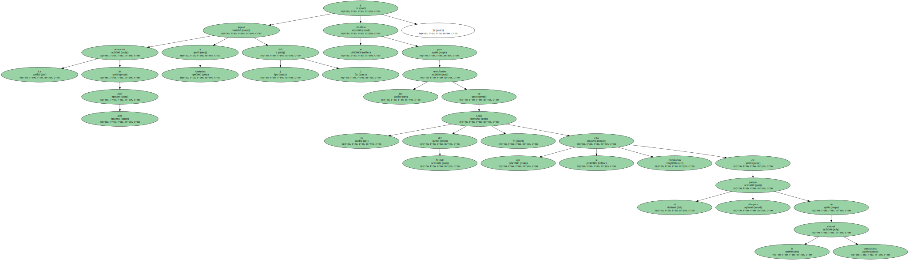La competición otorga tres plazas para los JJOO del 2000 y España necesita ganar un partido más para obtener el pasaporte olímpico.
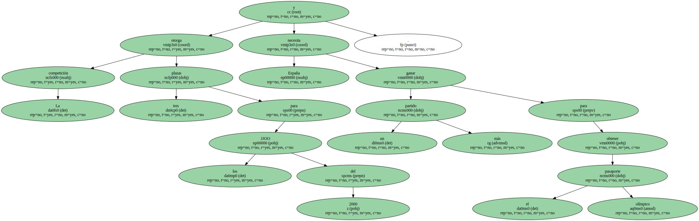Mañana se enfrentará a Hungría en las semifinales de la Copa del Mundo.
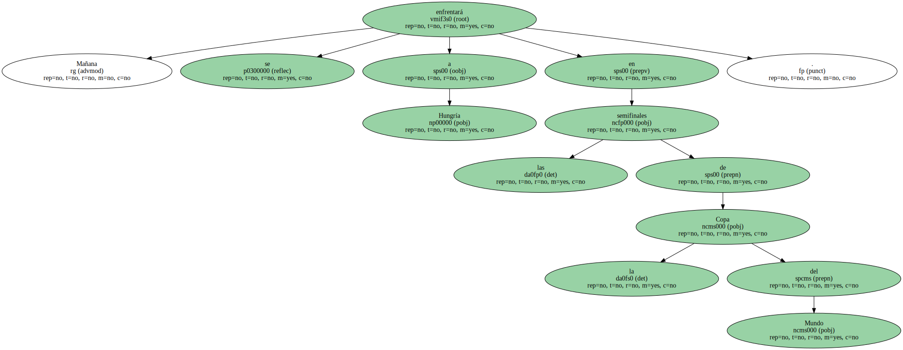Rusia e Italia protagonizarán el otro duelo.
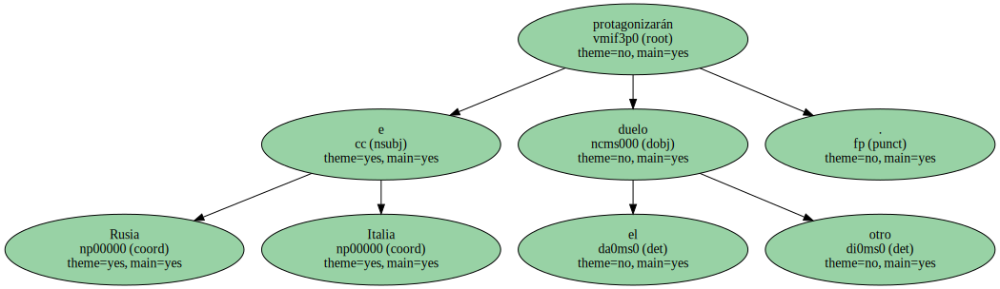El cambio de las normas de clasificación provocó ayer confusión sobre la posibilidad de que España ya estuviera clasificada porque Hungría es uno de los semifinalistas y ya tiene plaza olímpica por su condición de campeón europeo.
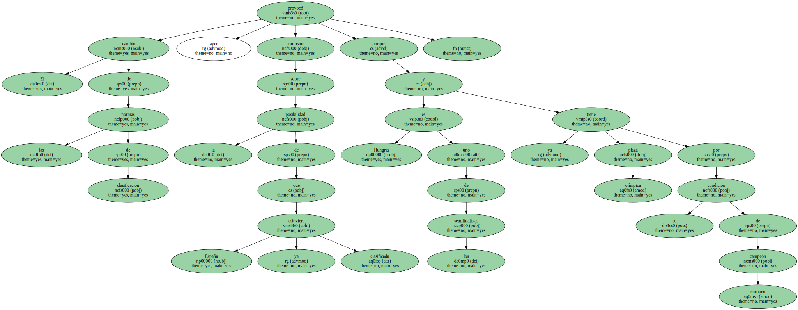La federación internacional de natación , decidió que si el campeón de Europa ( Hungría ) acababa entre los tres primeros de la Copa del Mundo , su puesto sería para el subcampeón europeo ( Croacia ).
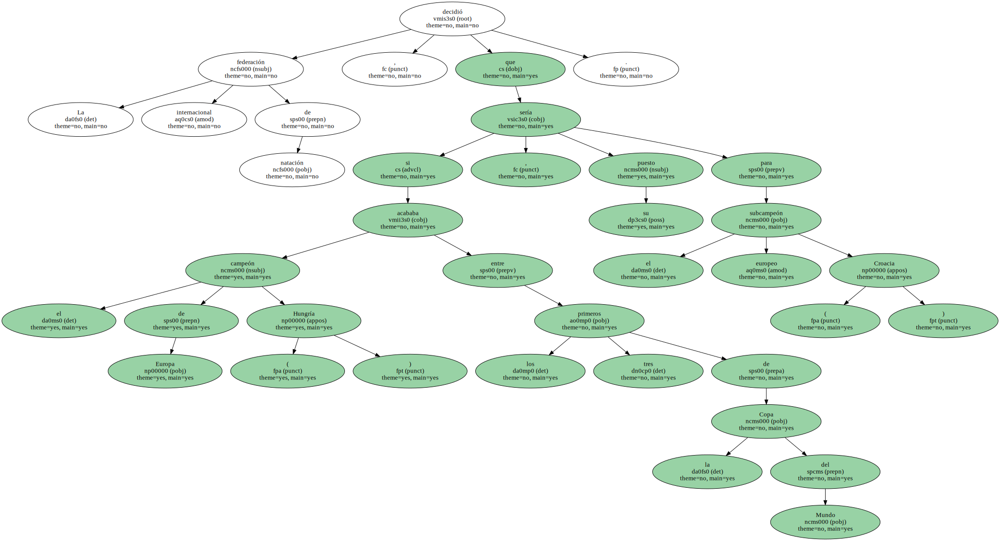Si España termina cuarta en la Copa del Mundo , aún tendrá una última oportunidad en el Preolímpico , que se disputará en la ciudad alemana de Hannóver en mayo del 2000.
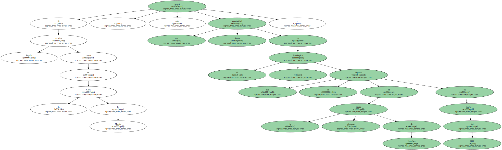Un partido dramático.
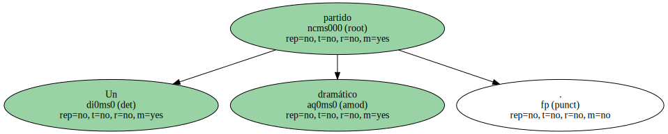Después de la victoria de EEUU ante Rusia , España necesitaba ganar a Australia para seguir adelante.
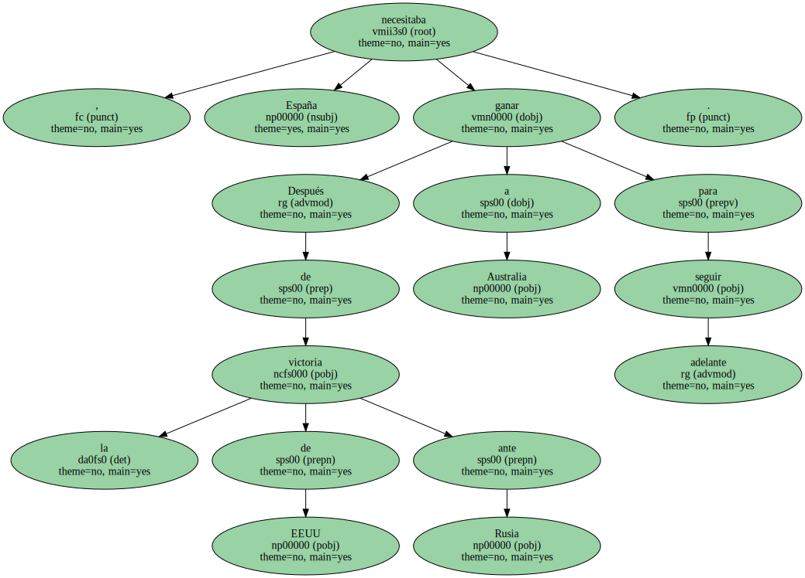No fue un trabajo fácil.
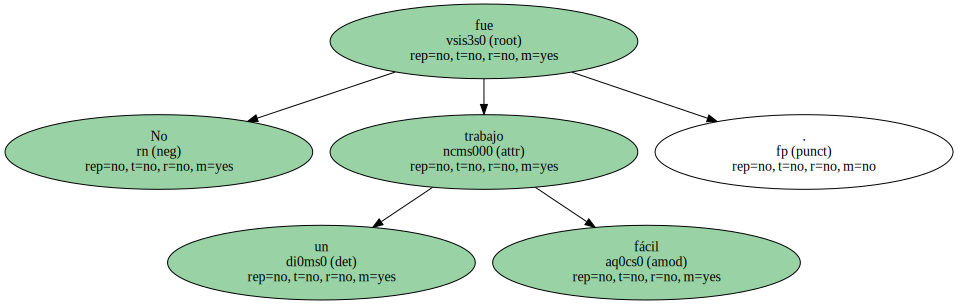La selección resolvió un dramático partido ante Australia , que llegó a dominar por 3-1 en el inicio del segundo periodo.
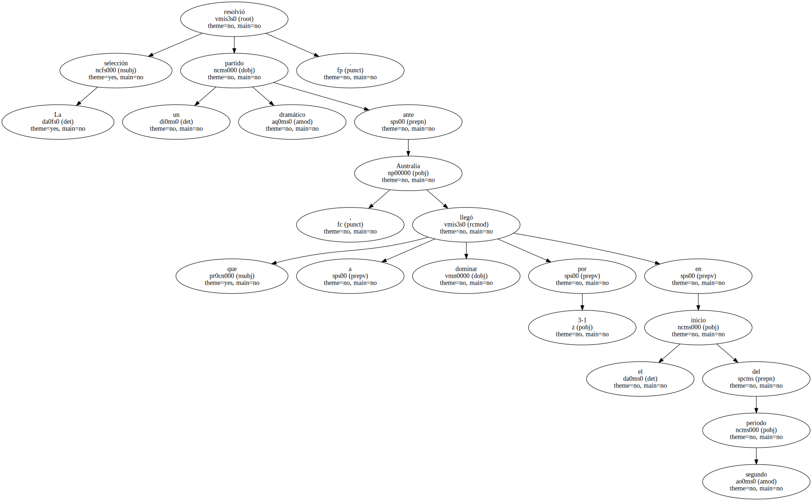Pero España reaccionó inmediatamente con dos goles de Salvador Gómez y Sergi Pedrerol.
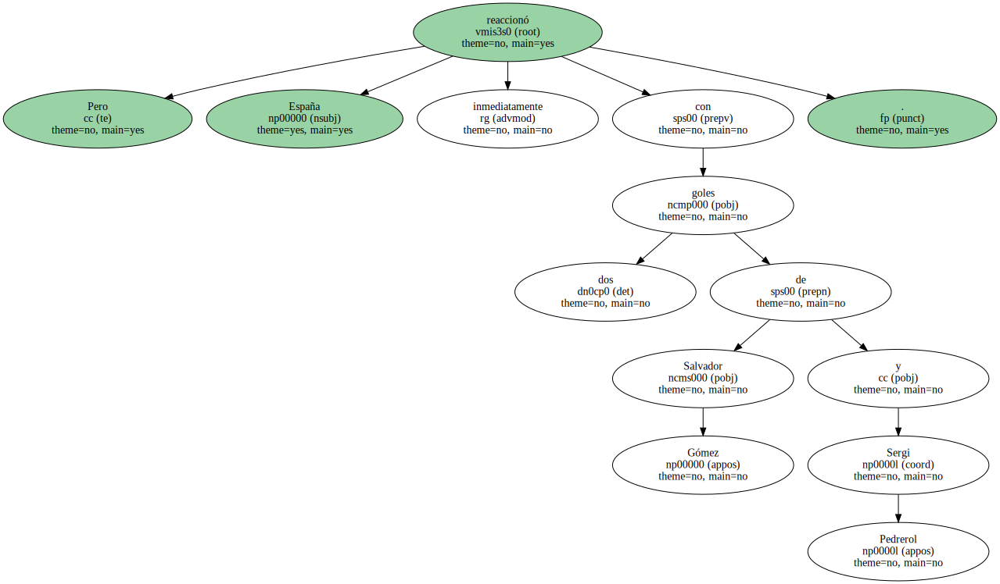El equipo de Jané se puso por delante por primera vez en el partido con otro gol de Gómez.
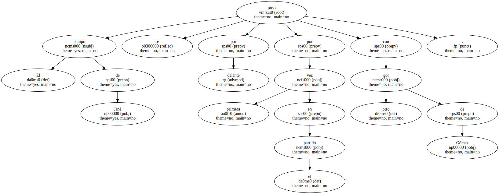El capitán Manuel Estiarte aumentó la diferencia , pero España tuvo que sufrir hasta la última jugada el acoso australiano.
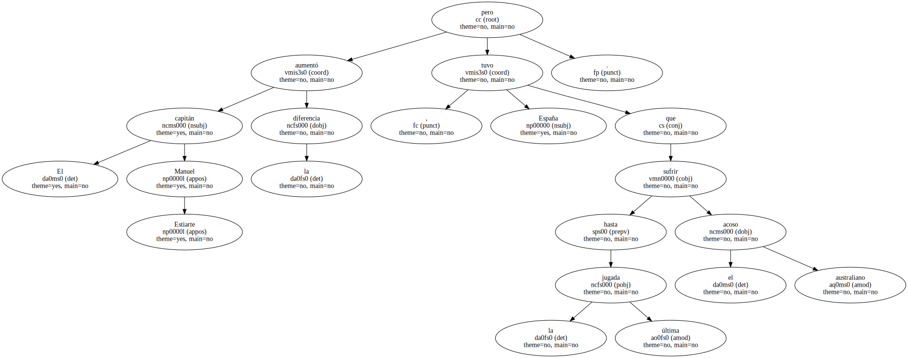La selección se recuperó de la derrota sufrida un día antes frente a Rusia , y con gran espíritu de lucha y determinación logró un triunfo imprescindible.
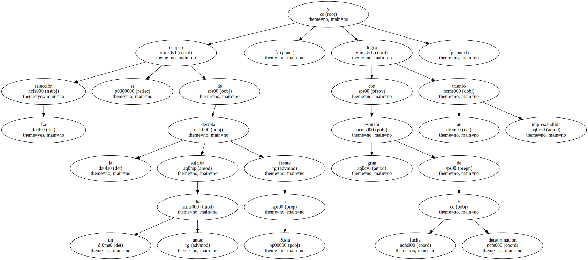Con una agresiva defensa , los españoles anularon casi siempre las intenciones ofensivas de su rival y , cuando se volcaron al ataque , supieron explotar sus pocas ocasiones de gol.

El portero Rollán , que ante Rusia tuvo una actuación discreta , se transformó en una muralla casi inexpugnable.
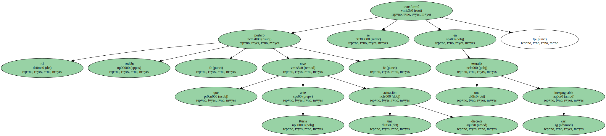En el ataque , la inteligencia de Estiarte y el oportunismo de Gómez fueron decisivos.
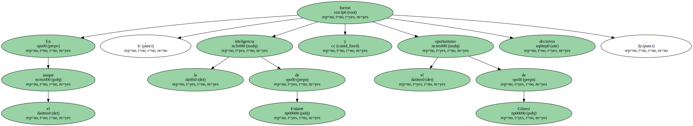" Fue un partido dificilísimo y , para nosotros , un encuentro a vida o muerte . Se nos complicó al principio cuando los australianos se pusieron 3-1 . No nos dejaban llegar a portería y , a la vez , nos pitaron 14 faltas ofensivas , algo insólito que nunca viví en mi carrera como seleccionador " , afirmó a Efe el técnico Joan Jané.
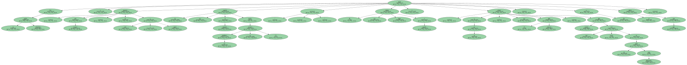" Estoy muy orgulloso del equipo , de la raza , la actitud , de saber sobreponerse a las adversidades . Hoy era el día D , teníamos la posibilidad de ir a semifinales y luchar por estar en los Juegos " , añadió Jané.
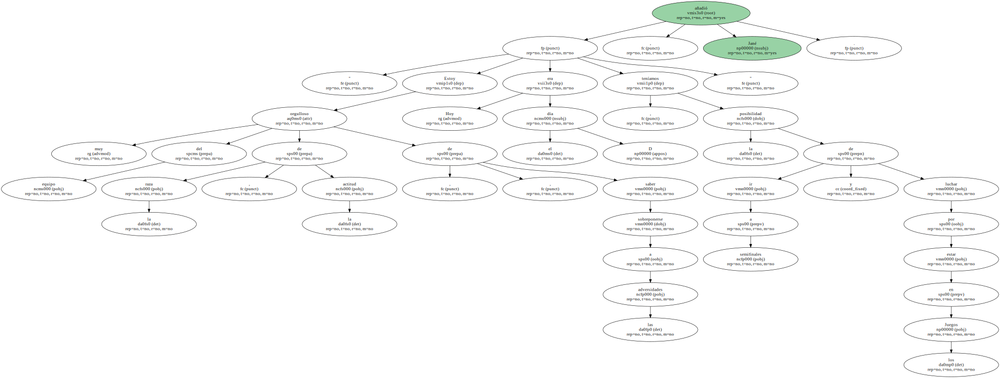Bakero deja de entrenar al Puebla.
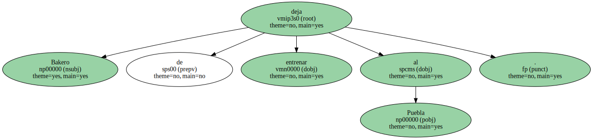El exjugador azulgrana abandonó el cargo de director técnico del club mexicano debido a la mala racha que atraviesa el equipo.
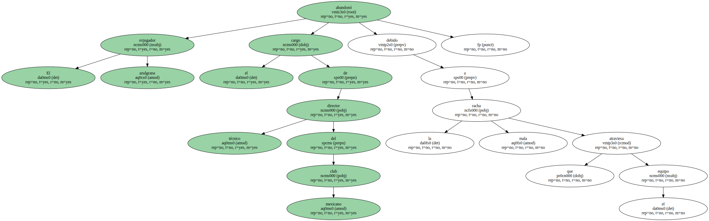El Puebla se ha convertido en el peor conjunto del torneo de invierno del fútbol mexicano de la primera división , según recordó la directiva en un comunicado de prensa , en el que le reconoce " el esfuerzo y la dedicación que ha tenido ".
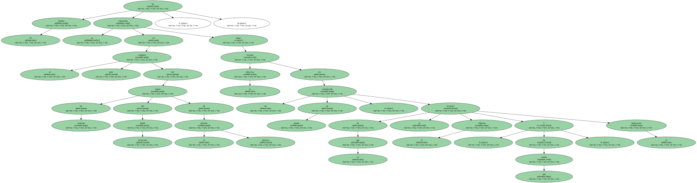Termina así la aventura de Bakero en el banquillo ya que en los 13 partidos que ha dirigido al Puebla , cinco del torneo anterior y ocho del actual , sólo ha ganado dos encuentros , ha empatado cuatro y ha encajado siete derrotas.

España logra dos plazas para Sydney en gimnasia rítmica.
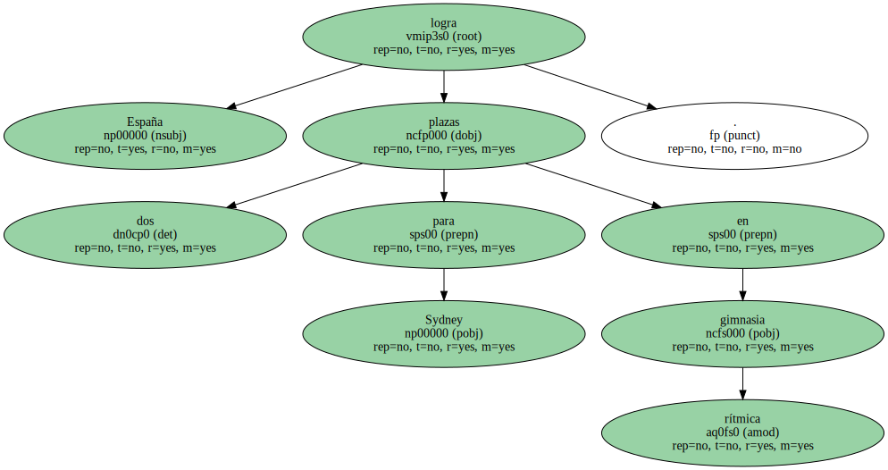El equipo español formado por Almudena Cid , Esther Domínguez y Alba Caride acabó en cuarto lugar en la fase de clasificación de los Mundiales de gimnasia rítmica que se celebran en Osaka ( Japón ) , lo que le asegura dos plazas , el máximo posible , para el concurso individual de los JJOO de Sydney.
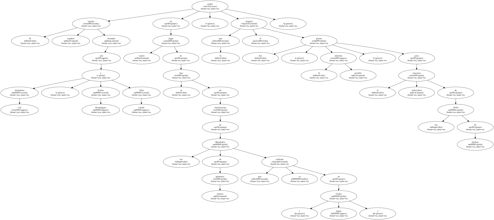España cumplió su objetivo de llegar a la final y entrar en los Juegos al terminar en esa cuarta posición , justo detrás de las tres grandes potencias mundiales : Rusia , Ucrania y Bielorrusia.
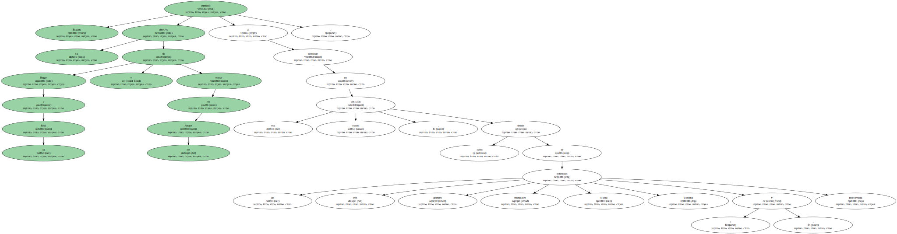Cinco naufragios en la Mini-Transat.
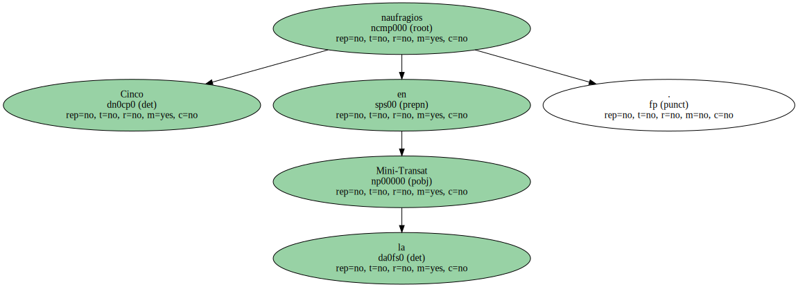Los helicópteros de salvamento españoles y otros barcos tuvieron que rescatar ayer a otros tres navegantes solitarios que participan en la travesía del Atlántico reservada a barcos de menos de 6,5 metros.

El temporal en el golfo de Vizcaya se ha cobrado un alto precio , aunque afortunadamente por ahora no hay que lamentar víctimas personales.
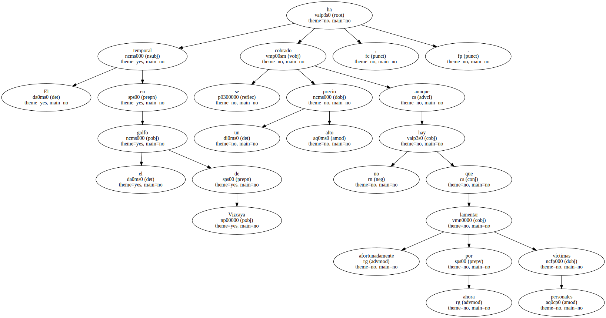El Escuela Náutica de Catalunya de Albert Bargués se decantó más al Oeste que la mayoría de los participantes y recupera posiciones cuando se acerca a las costas de Galicia.
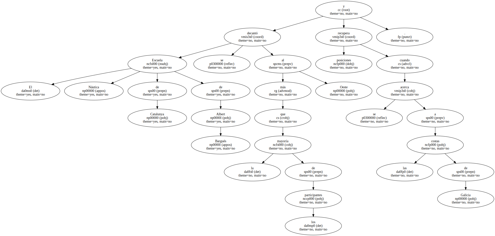El Barça de balonmano empata en Irún.
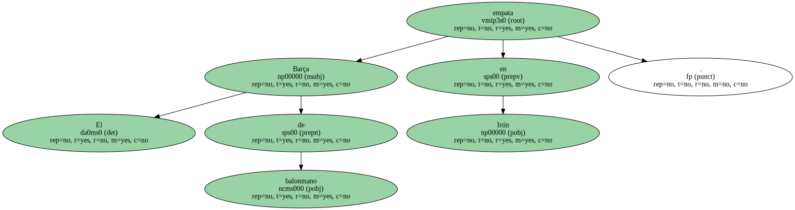El equipo de Valero Rivera cedió ayer el primer punto de la temporada en la pista del Bidasoa de Irún ( 22-22 ).
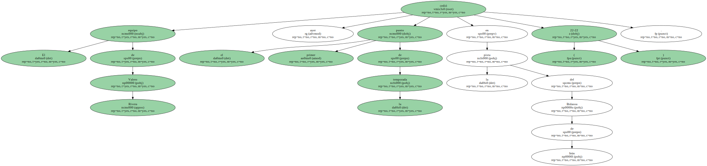El campeón de Liga recibió su primer aviso.
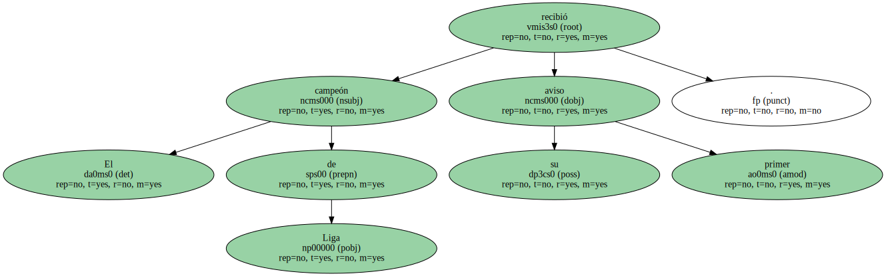Valero Rivera prescindió de Mateo Garralda durante la pretemporada y ayer , en el primer partido en el que Iñaki Urdangarín no pudo jugar a causa del nacimiento de su hijo , el bloque azulgrana se resintió en el lateral derecho ante la ausencia de un zurdo con experiencia.

El Barça volverá a jugar mañana en el Palau Blaugrana ( 18.45 horas ) ante el Burgas de Bulgaria en la ida de la eliminatoria previa de la Copa de Europa.
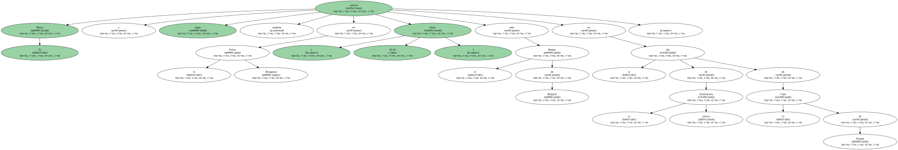